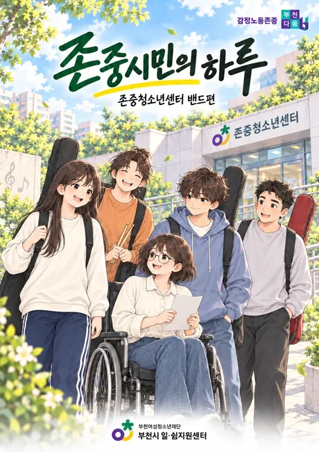
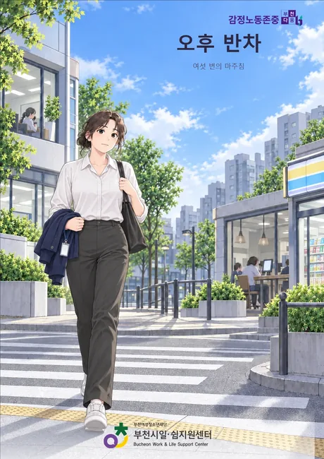

청소년용과 성인용이 따로 있습니다. 만화부터 봐도 되고, 진단부터 해도 됩니다.
밴드 연습을 앞둔 다섯 친구의 하루. 편의점, 버스, 배달에서 마주친 순간들.

오전에는 센터 노동자, 오후에는 시민. 수현이 겪는 여섯 번의 마주침.

존댓말은 기본, 정중함은 품격 일하는 사람 둘 가운데 한 명이 감정노동자인 도시, 부천. 감정노동은 특별한 누군가의 일이 아니라 우리가 매일 주고받는 이야기입니다. 오전에는 일하는 사람이고, 오후에는 손님입니다. 서로를 존중하는 마음이 당연한 일상이 되도록 부천이 함께 만들어갑니다.